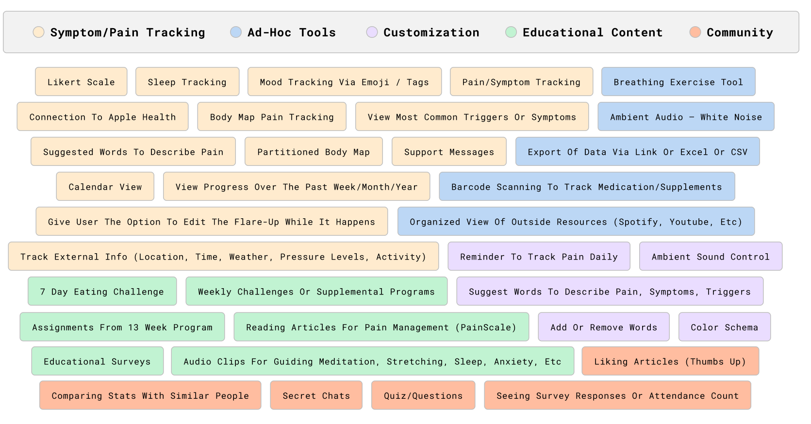

Background
During the spring semester of my senior year, I joined a team of student designers in a contracted design
project in the healthcare industry. Of course, COVID-19 struck mid-way through the semester,
resulting in a transition to remote work, which called for some improvising and adapting.
The Ask
According to our client, the mobile app is centrally a cognitive behavioral therapy (CBT) and mindfulness training program.
Our job was to conduct research into how this experience should look and how the mobile app can best serve.
Going into our first client meeting, we had a vague idea of what Fahed and Steve envisioned for this product
and over time, gradually whittled down our ice block into a scuplture. Here is where we started out:
User Problem
No app or community for solving chronic pain with alternative medicine and users are at a loss as to what to do
next
Opportunity
Build a welcoming community and source of information to empower chronic pain patients
Interactive Prototype
Check out my team's hi-fidelity prototype on Figma! Continue reading below for the case study with a focus on
my portion of the project: health tracking and insights.
Understanding Users with Chronic Pain
User Interviews
We found 5 users across the U.S. with Rheumatoid Arthritis and other chronic conditions through a user research recruiting platform.
We prepared an interview guide and set up video calls to get to know more about how their condition(s) affect their daily life,
perception of alternative medicine and mindfulness, etc.
Here are some pain points and other insights to help understand the user and how they live with chronic conditions:
- There is a lot of fear and/or anxiety around flare-ups. Stress and weather are common triggers.
- Many users continuously do extensive research about their condition and different treatments. They deeply read journal articles,
scientific research, and medical websites.
- Online communities, like Facebook groups and subreddits, are places where they can listen to first-hand experiences and
receive true empathy. Sometimes family members do not truly understand what they are going through.
- Most users think practicing mindfulness is for depression and anxiety and are not aware of how it can be applied to chronic pain.
- Users are forced to adapt their lifestyle to their condition and largely choose to stay at home,
where they can control their environment.
- Since CBD is not legal on a federal level and access is limited in some states, some users were apprehensive towards it as an alternative medicine, but
some are willing to try anything that will help.
Literature
Because the goal of the app is to approach health holistically, my team also did the same in our research.
We consulted some design research and methods to learn how to build technology that truly takes care of its users.
- Here are a couple of ways to design for mindfulness that guided my thoughts as I designed:
value human attention, discourage addictive usage, and minimize social anxiety.
Source
- “Patients preferred easy tap user interfaces to multitap or slider methods, and vertical question layout...
Patients liked to be engaged by progress feedback reports and educational tips...found a trended outcome summary
report helpful which provides more precise details on whether and how the symptoms are changing over time.”
Source
- “The progress line charts were also thought to work well as they show “a trend of symptoms over time-getting better or worse.”
Participants also liked to see comparative data, such as month to month, “my knee pain in this month is better than last month.”
And some participants would like the app to be able to drill down to specific data points and allow users to add notes to provide a
better understanding of the circumstances that lead to major fluctuations."
Source
- In an experiment co-designed by RA patients, users expected "(1) a calendar feature for goal setting, planning, and recording
of physical activity performance and progress, and
(2) a small community feature for positive feedback and support from peers."
Source
Competitive Analysis
We looked at some of the top symptom management apps in the App store like Gali Health, Flo, Migraine Buddy, and Flaredown for
inspiration.
Framing the Problem
With the new onslaught of knowledge, it was overwhelming how many directions we could go and designs we could explore.
Thus, my team and I held a framing workshop with our client to clarify our deliverable and
identify the scope of the mobile app.
While our problem statement still came out long and vague, this was an effective way to communicate in order for both parties
to be on the same page. Through this framing workshop, we were able to better meld client expectations and user needs
discovered through our research.
User Problem (Reframed)
How might we create a supportive, empathetic, realistic but optimistic environment [for patients] that pairs education with community
to guide chronic pain patients through the ups and downs of their condition?
Ideation
As a team, we invited our clients to brainstorm with us a list of interactions that helped to address pain points
found in our the research. Then, we grouped them by common denominators.

List of possible features that could be in the app
This was an awesome list of interactions to put together into a mobile app, but we still lacked direction in our
design process. After diverging on so many ideas, we needed to re-center our thought process around the user.
Planning
My team and I created this more specific problem map to encompass all of the user's different needs and take into account
multiple perspectives of our overarching problem. We then grouped all the opportunities and divided them into different features of the mobile app.
This analysis method allowed us to prioritize which features and interactions to design for the minimum viable product.
I've underlined the opportunities for my group: the Health Tracking feature.